Partial Engine Assembly (2AZ-FE) Disassembly |
| 1. Remove Oil Filler Cap Sub-assembly |
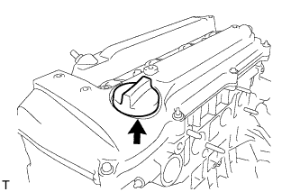 |
Remove the oil filler cap from the cylinder head cover.
| 2. Remove Oil Filler Cap Gasket |
 |
Remove the oil filler cap gasket from the oil filler cap.
| 3. Remove Ventilation Valve Sub-assembly |
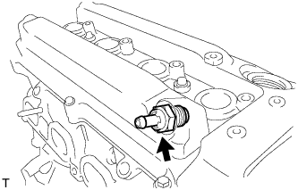 |
Using a deep socket wrench (22mm), remove the ventilation valve from the cylinder head cover.
| 4. Remove Spark Plug |
 |
Remove the 4 spark plugs from the cylinder head.
| 5. Remove Oil Filter Sub-assembly |
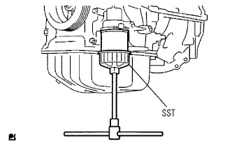 |
Using SST, remove the oil filter.
| 6. Remove Oil Filter Union |
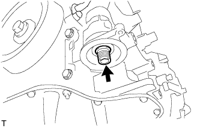 |
Using a 12 socket hexagon wrench, remove the oil filter union.
| 7. Remove Cylinder Head Cover Sub-assembly |
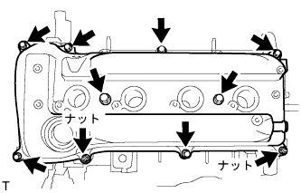 |
Remove the 8 bolts and 2 nuts, and remove the cylinder head cover.
| 8. Remove Cylinder Head Cover Gasket |
 |
Remove the cylinder head cover gasket from the cylinder head cover.
| 9. Remove V-ribbed Belt Tensioner Assembly |
 |
Remove the bolt and nut, and remove the V-belt tensioner assembly.
| 10. Remove Crankshaft Position Sensor |
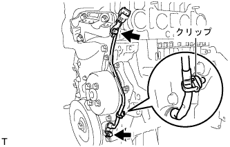 |
Remove the 2 bolts and clip, and remove the crankshaft position sensor.
| 11. Remove Engine Mounting Bracket RH |
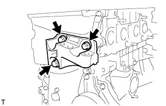 |
Remove the 3 bolts and remove the engine mounting bracket RH from the timing chain cover.
| 12. Remove Camshaft Position Sensor |
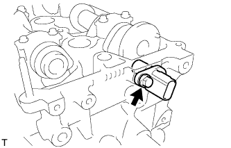 |
Remove the bolt and remove the camshaft position sensor from the cylinder head.
| 13. Remove Crankshaft Pulley |
 |
Turn the crankshaft clockwise to set the No. No.1 cylinder to TDC/compression, and align the timing mark (notch) with the 0° position of the timing chain cover.
At this time, check that the timing marks of the camshaft timing gears and the bearing caps are in the positions shown in the illustration.
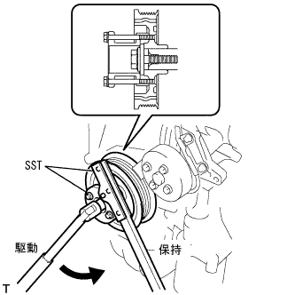 |
Using SST, hold the crankshaft pulley and loosen the pulley bolt.
Screw the pulley bolt 2-3 pitches into the crankshaft.
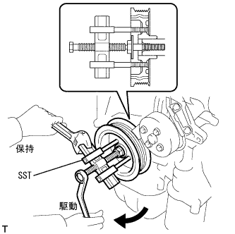 |
Using SST, remove the crankshaft pulley and pulley bolt.
| 14. Remove Camshaft Timing Oil Control Valve Assembly |
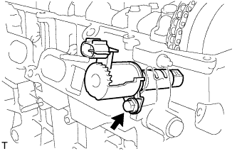 |
Remove the bolt and remove the camshaft timing oil control valve assembly from the cylinder head.
| 15. Remove Chain Tensioner Assembly NO.1 |
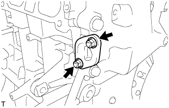 |
Remove the 2 nuts, and remove the chain tensioner assembly No.1 and gasket.
| 16. Remove Water Pump Pulley |
 |
Using SST, remove the water pump pulley.
| 17. Remove Water Pump Assembly |
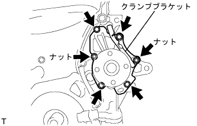 |
Remove the 4 bolts and 2 nuts, and remove the water pump assembly and wire harness clamp bracket.
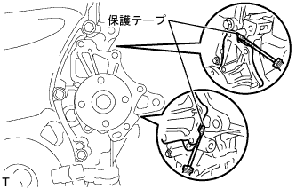 |
Using a screwdriver wrapped with protective tape, pry at the location shown in the illustration and remove the water pump assembly.
| 18. Remove Oil Pan Drain Plug |
 |
Remove the oil pan drain plug and gasket from the oil pan.
| 19. Remove Oil Pan Sub-assembly |
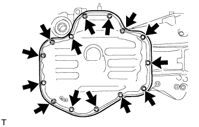 |
Remove the 12 bolts and 2 nuts.
 |
Using an oil pan seal cutter, remove the oil pan.
| 20. Remove Timing Chain or Belt Cover Sub-assembly |
Using a torx socket wrench (E10), remove the stud bolt.
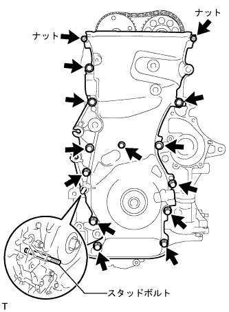 |
Remove the 12 bolts and 2 nuts.
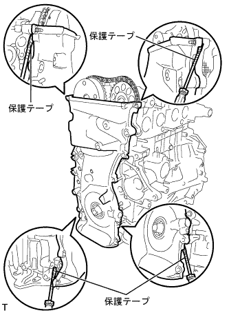 |
Using a screwdriver wrapped with protective tape, pry at the location shown in the illustration and remove the timing chain cover.
| 21. Remove Timing Gear Case or Timing Chain Case Oil Seal |
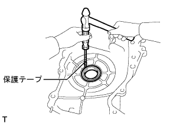 |
Using a screwdriver wrapped with protective tape, remove the timing gear (chain) case oil seal.
| 22. Remove Crank Angle Sensor Plate NO.1 |
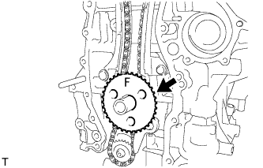 |
Remove the crank angle sensor plate No.1 from the crankshaft.
| 23. Remove Timing Chain Guide |
 |
Remove the bolt and remove the timing chain guide from the crank cap.
| 24. Remove Chain Tensioner Slipper |
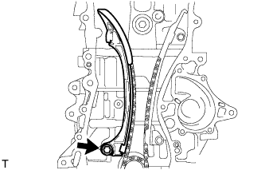 |
Remove the bolt and remove the chain tensioner slipper.
| 25. Remove Chain Vibration Damper NO.1 |
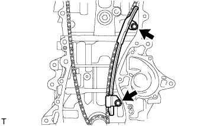 |
Remove the 2 bolts and remove the chain vibration damper No.1.
| 26. Remove Chain Sub-assembly |
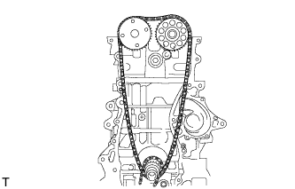 |
Remove the chain.
| 27. Remove Crankshaft Timing Gear or Sprocket |
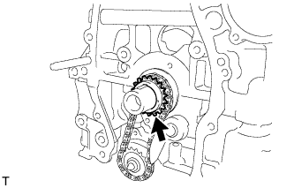 |
Remove the crankshaft timing gear from the crankshaft.
| 28. Remove Chain Sub-assembly NO.2 |
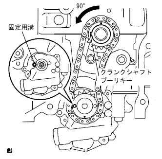 |
Turn the crankshaft 90° counterclockwise, and align the fixing hole of the oil pump drive shaft with the fixing groove of the oil pump.
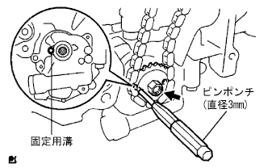 |
Insert a pin punch (diameter 3mm) into the fixing hole of the oil pump drive shaft gear to hold the gear, and remove the nut.
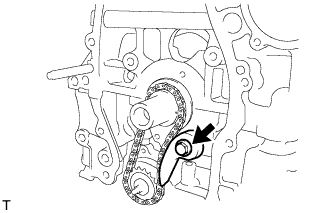 |
Remove the bolt, and remove the chain tensioner plate and damper spring.
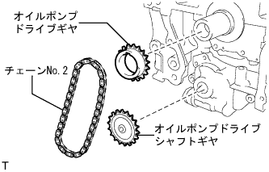 |
Remove the oil pump drive gear, oil pump drive shaft gear and chain No.2.
 |
Using a screwdriver wrapped with protective tape, remove the crankshaft pulley key and oil pump drive spline key from the crankshaft.
| 29. Remove Camshaft NO.2 |
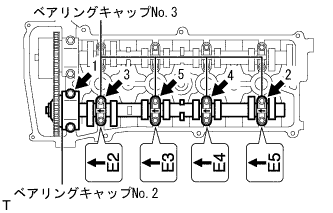 |
Remove the 4 camshaft bearing caps No.2 and No.3 in the order shown in the illustration.
Remove the camshaft No.2.
| 30. Remove Camshaft |
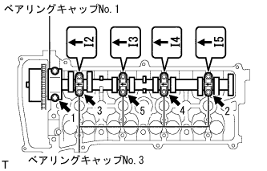 |
Remove the 4 camshaft bearing caps No.1 and No.3 in the order shown in the illustration.
Remove the camshaft.
| 31. Remove Camshaft Bearing NO.1 |
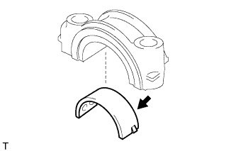 |
Remove the camshaft bearing No.1 from the camshaft bearing cap No.1.
| 32. Remove Camshaft Bearing NO.2 |
 |
Remove the camshaft bearing No.2 from the cylinder head.
| 33. Remove Camshaft Timing Gear or Sprocket |
 |
Secure the hexagonal service portion of the camshaft in a vise, with aluminum plates in between.
Remove the bolt and remove the camshaft timing gear.
| 34. Remove Camshaft Timing Gear Assembly |
Secure the hexagonal service portion of the camshaft in a vise with aluminum plates in between, and check that the camshaft timing gear assembly does not turn.
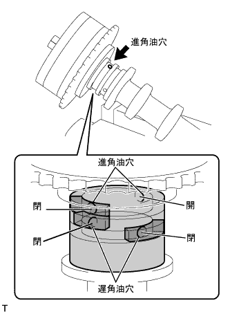 |
Cover all oil holes in the cam journal with vinyl tape, except for 1 hole (advance oil hole) in the position shown in the illustration.
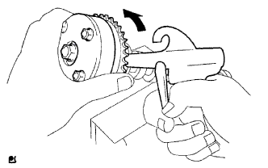 |
Into the oil hole 150kPa{1.5kgf/cm2While applying approximately } of air pressure, force the camshaft timing gear assembly to rotate in the advance direction (counterclockwise).
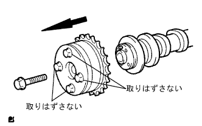 |
Remove the flange bolt and remove the camshaft timing gear assembly.
| 35. Remove Cylinder Head Sub-assembly |
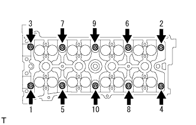 |
Using a double hexagon wrench (10mm), uniformly loosen the cylinder head bolts in 2-3 steps in the order shown in the illustration, and remove the 10 bolts and 10 plate washers.
| 36. Remove Cylinder Head Gasket |
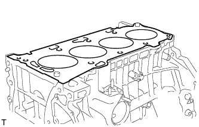 |
Remove the cylinder head gasket from the cylinder head.
| 37. Remove Cylinder Block Water Jacket Spacer |
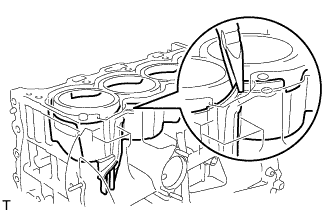 |
Using needle-nose pliers, remove the cylinder block water jacket spacer from the water jacket.
| 38. Remove Cylinder Block Water Drain Cock Sub-assembly |
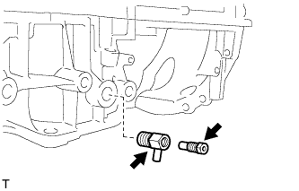 |
Remove the water drain cock plug from the water drain cock.
Remove the water drain cock from the stiffening crankcase.
| 39. Remove Oil Control Valve Filter |
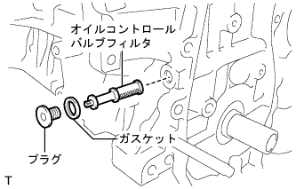 |
Using a 8 socket hexagon wrench, remove the screw plug, and remove the oil control valve filter and gasket.
| 40. Remove Plug NO.1 (w/ Head Taper Screw) |
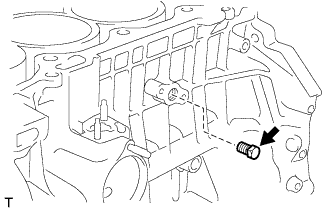 |
Remove the taper screw plug No.1 from the cylinder block.
| 41. Remove Oil Pump Assembly |
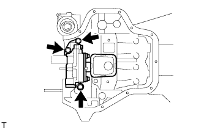 |
Remove the 3 bolts, and remove the oil pump assembly and gasket.
| 42. Inspect Balance Shaft Thrust Clearance |
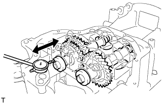 |
Using a dial indicator, measure the thrust clearance of each balance shaft.
| 43. Inspect Balance Shaft Oil Clearance |
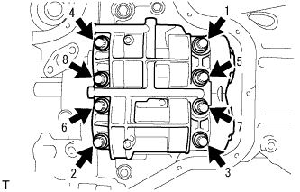 |
Using a socket wrench (12mm), uniformly loosen the 8 balance shaft housing set bolts in several steps in the order shown in the illustration, and remove the balance shaft housing.
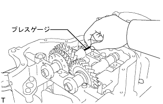 |
Place a strip of Plastigage across the journal and install the balance shaft housing.
Apply a light coat of engine oil to the bolt seats.
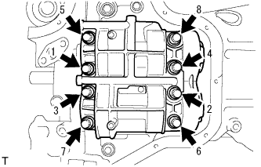 |
Using a socket wrench (12mm), temporarily tighten the 8 balance shaft housing set bolts in several steps in the order shown in the illustration, then tighten them to the specified torque.
 |
Mark the front of the housing set bolt heads with paint.
Using the paint marks as a guide, tighten each bolt an additional 90° in the tightening order.
Check that all paint marks have been turned 90° in the tightening direction.
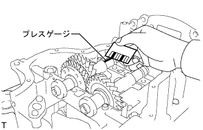 |
Remove the balance shaft housing and measure the Plastigage at its widest point.
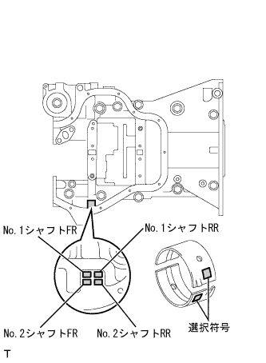 |
If the clearance is more than the maximum, select and replace the bearing.
| Mark | Balance Shaft Housing Bore Diameter [mm] | Bearing Center Wall Thickness [mm] | Balance Shaft Journal Diameter [mm] |
|---|---|---|---|
| 1 | 26.000-26.006 | 1.486-1.489 | 22.985-23.000 |
| 2 | 26.007-26.012 | 1.490-1.492 | 22.985-23.000 |
| 3 | 26.013-26.018 | 1.493-1.495 | 22.985-23.000 |
Inspect Balance Shaft Housing Set Bolt
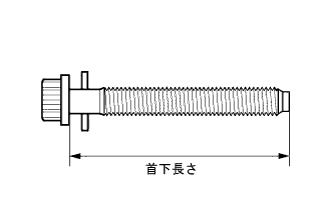 |
Using vernier calipers, measure the under-head length of the housing set bolts.
| 44. Remove No. No.1 and No. No.2 Balance Shafts |
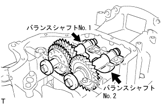 |
Remove the No. No.1 and No. No.2 balance shafts.
| 45. Remove Balance Shaft Bearing NO.1 |
 |
Remove the 8 balance shaft bearings No.1 from the stiffening crankcase assembly and balance shaft housing.
| 46. Remove Engine Rear Oil Seal |
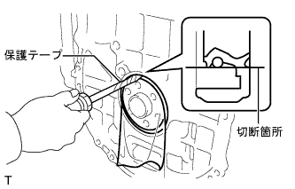 |
Using a utility knife, cut off the oil seal lip.
Using a screwdriver wrapped with protective tape, pry out the oil seal.
| 47. Remove Stiffening Crankcase Assembly |
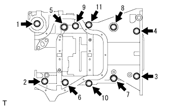 |
Uniformly loosen and remove the 11 bolts in several steps in the order shown in the illustration.
Using a screwdriver wrapped with protective tape, pry at the locations shown in the illustration and remove the stiffening crankcase assembly.
 |
Remove the O-ring from the cylinder block.
| 48. Inspect Chain Sub-assembly |
Using a spring scale, measure the length of the timing chain when it is pulled with a force of 140N{14.3kgf}.
| 49. Inspect Chain Sub-assembly NO.2 |
| 50. Inspect Oil Pump Drive Gear |
Wrap the chain around the oil pump drive gear and, using vernier calipers, measure the outer diameter.
| 51. Inspect Oil Pump Drive Shaft Gear |
Wrap the chain around the oil pump drive shaft gear and, using vernier calipers, measure the outer diameter.
| 52. Inspect Camshaft Timing Gear Assembly |
Wrap the chain around the camshaft timing gear assembly and, using vernier calipers, measure the outer diameter.
| 53. Inspect Camshaft Timing Gear or Sprocket |
Wrap the chain around the camshaft timing gear and, using vernier calipers, measure the outer diameter.
| 54. Inspect Crankshaft Timing Gear or Sprocket |
Wrap the chain around the crankshaft timing gear and, using vernier calipers, measure the outer diameter.
| 55. Inspect Chain Tensioner Slipper |
Using vernier calipers, measure the dimension of the chain tensioner slipper shown in the illustration.
| 56. Inspect Chain Vibration Damper NO.1 |
Using vernier calipers, measure the dimension of the chain vibration damper No.1 shown in the illustration.
| 57. Inspect Chain Tensioner Plate |
Using vernier calipers, measure the dimension of the chain tensioner plate shown in the illustration.
| 58. Inspect Cylinder Head Set Bolt |
Using vernier calipers, measure the under-head length of the cylinder head bolts.
| 59. Inspect Chain Tensioner Assembly NO.1 |
With the cam lock released, push the plunger and check that it moves smoothly.
With the cam lock applied, check that the plunger does not move when pushed.
| 60. Inspect Camshaft |
Runout Inspection
Place the camshaft on V-blocks.
Using a dial indicator, measure the camshaft runout.
Height Inspection
Using a micrometer, measure the cam lobe height.
Outer Diameter Inspection
Using a micrometer, measure the journal diameter.
| Measurement Point | Standard [mm] |
|---|---|
| No. No.1 Journal | 35.971-35.985 |
| Other than No. No.1 Journal | 22.959-22.975 |
)| 61. Inspect Camshaft NO.2 |
Runout Inspection
Place the camshaft on V-blocks.
Using a dial indicator, measure the camshaft runout.
Height Inspection
Using a micrometer, measure the cam lobe height.
Outer Diameter Inspection
Using a micrometer, measure the journal diameter.
| Measurement Point | Standard [mm] |
|---|---|
| No. No.1 Journal | 35.971-35.985mm |
| Other than No. No.1 Journal | 22.959-22.975mm |
)